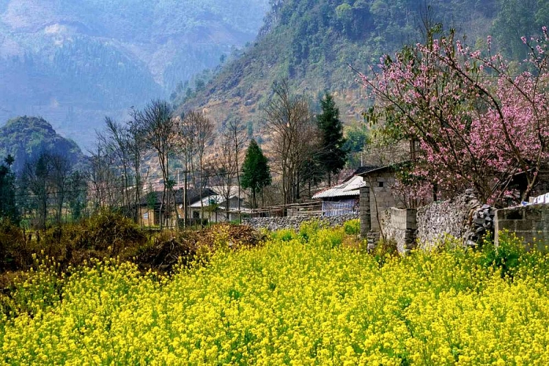
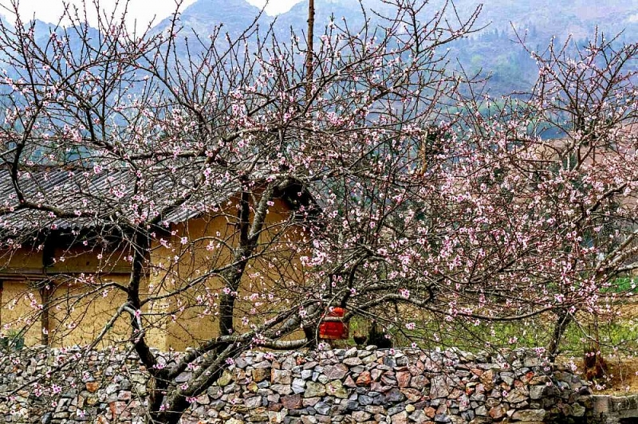
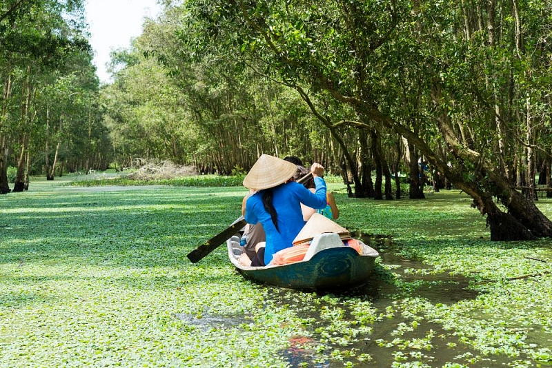
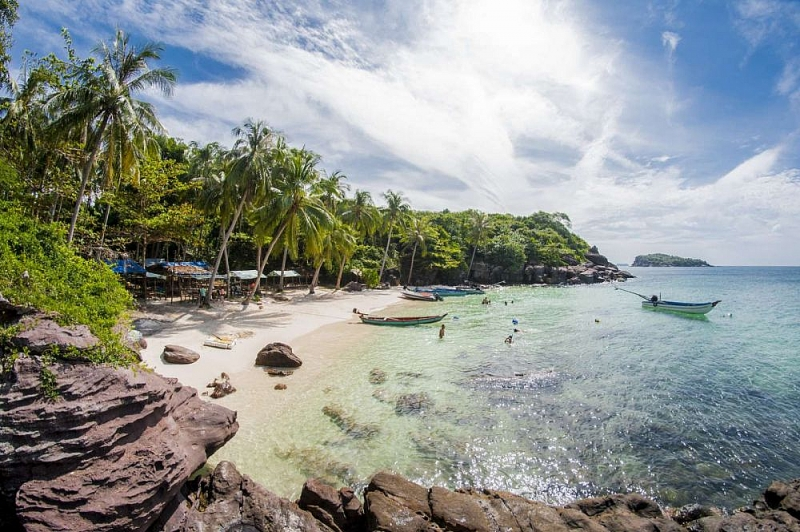

Seaweed in the northeastern flower season
Every year, every winter, flowers all over the Northeast are racing to bloom, one flower just died, another flower has arrived. (Source: Vietravel)
Starting from the immense white mustard flower fields in Moc Chau from November to the end of December, next is the season of plum blossoms, plum blossoms cover the hillsides of Moc Chau town, Bac Ha plateau ...
Entering the last days of Winter and early Spring, running around the northeastern street, from Moc Chau, Son La to Lai Chau, Dien Bien, turning to Sa Pa, Lao Cai ... you will see colorful peach blossoms dominate everywhere. It is also peach fading, pink color faintly, the body of the old mossy branches and moss, but digging the forest is different from the garden planting in the lowlands. The forest root is strong and strong, the flower color looks richer, more vitality, and captivates many visitors.
Not only that, if you have more time, you can join the trip to the entire Northeast, just 5-6 days to enjoy the full picture of the highlands of the North to the East.
Colorful peach blossoms in Moc Chau (Son La). (Source: Vietravel)
It is Sapa with a snow-white dream, with ancient houses lying precariously on each slope, colorful highland markets. Attend Na Hoi horse racing, experience Bac Ha market culture (Lao Cai), immerse yourself in street festivals and culinary festivals, enjoy local specialties ...
Or try the fascinating experiences when arriving in Ha Giang: admire the picturesque triangular flower fields stretching on the mountainside in Xin Man highlands, Hoang Su Phi with its pristine and rustic features intact Mountain of the Northwest ...
Da Lat - a city of flowers, followed the great call of the Central Highlands

Flowers bloom brilliantly on the streets in Da Lat. (Source: Vietravel)
In particular, also in the last days of the East, coming to Da Lat, you can also admire the cherry blossoming paths. Fragile pride in the wind, cherry apricot blossom is a harmonious combination between northern peach blossoms and southern apricot blossoms. Walking in the gentle pink color of the cherry apricot trees, we love this lovely mountain town land.
Even in the coming winter days, you can also take a trip to the whole Central Highlands to feel a sunny and windy land, somewhere with a pleasant smell of coffee, open houses and even The sound of gongs resounds proudly and deeply.
Rarely is a land as charming, unique and romantic as the Central Highlands. A day in the Central Highlands always feels like going between four seasons. Coming to the Central Highlands at the end of the year, you will feel all the cold highlands, the colors of wild flowers flooding the red dirt road, the sweltering summer sun and the sparkling yellow of autumn.
Famous for its tranquility, lightness, fresh air, ... The Central Highlands makes many people think that this place only has trees, hills and ... coffee. However, once you come to this land, you will be surprised by the magic here.
Visit Chu Dang Ya - a green, one-color volcano, admire Minh Thanh Pagoda - a Japanese landscape in the heart of Gia Lai, overwhelmed by the breathtaking nature of Ta Dung Lake, drop in the midst of a thousand Mang Den, and very Many typical cultural features, traditional dishes are wonderful experiences that we cannot find anywhere else.
"Live slowly" with the peaceful river-western garden
If you are tired of curling up in a cotton blanket or thick coat, a trip to the warm land will be a pretty good choice for you!
The West, where there is a peaceful river, luxuriant orchard, green island and sweet dance ... is always the first choice for anyone who wants to enjoy the fresh air. (Source: Vietravel)
Unlike the climate in the North, the South of Vietnam doesn't seem to have winter, maybe it's just cold at night and in the morning.
Traveling to the West any season of the year, you will be "collapsed" before the warmth and gratitude of the horticultural residents.
Lenh dang on Cai Rang floating market, enjoy the beautiful green picture in Tra Su Melaleuca forest, immerse himself in the wonderful nature with the sincere and idyllic local life in Chau Doc floating village, travel around Ha Tien - The poem in the southwestern region of the country, or tasting the standard dishes of the west of the river are experiences that cannot be ignored in the journey "escaping from the winter cold, to the warm sunny region".
Enjoy beautiful, warm and peaceful beaches
From October to March next year is the time when Phu Quoc and Con Dao enter the most beautiful season. (Source: Vietravel)
To get rid of the body "frozen" for too long, this winter, come to the South of the S-shaped strip of land, immersed in the freshness of the blue sea, white sand, yellow sunshine in Phu Quoc, Con Dao.
While the North is welcoming the cold waves of winter, these waters are in the dry season with cool, pleasant weather, calm sea, mild sunshine, suitable for holiday schedules. maintenance.
Not only possessing wild beauty, diverse ecosystems, Phu Quoc and Con Dao are also the "capitals" of luxury resorts and 5-star hotels. Each resort and hotel here is a wonderful architectural work, masterpiece, giving you the freedom to "check-in", "virtual life" like you are in Europe.
In particular, now, with only 2 hours of direct flight from Hanoi, Con Dao has become a very "cool" tourist destination this winter with the advantage of convenient travel schedules, itineraries. diverse and interesting.